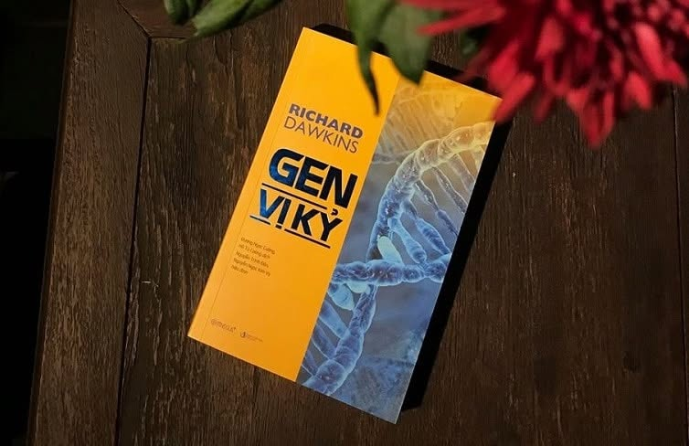

Gen Vị Kỷ
Richard Dawkins

Khởi đi từ việc phân tích dưới góc độ khoa học di truyền, viện sĩ Richard Dawkin giải mã động lực của tiến hoá và cho rằng ích kỷ chính là tập tính con người, thậm chí, là văn hoá của nhân loại.
💡 Ý Tưởng Cốt Lõi
• Cỗ máy sinh tồn: Sinh vật (bao gồm cả con người) chỉ là những "cỗ máy sinh tồn" tạm thời do gen tạo ra để bảo vệ và truyền tải chính nó qua các thế hệ.
• Vị kỷ ở cấp độ gen: Chọn lọc tự nhiên không diễn ra ở cấp độ loài hay cá thể, mà ở cấp độ gen. Gen nào tối ưu hóa được khả năng tự sao chép sẽ tồn tại.
• Bản chất của vị tha: Các hành vi hy sinh, giúp đỡ đồng loại trong tự nhiên thực chất là sự "vị kỷ" của gen. Gen thúc đẩy sinh vật cứu giúp những cá thể có cùng huyết thống để đảm bảo bản sao của chính gen đó được sống sót.